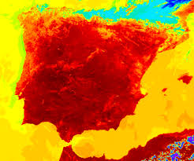

Las Olas de Calor
España ha estado enfrentando olas de calor más frecuentes en los últimos años, principalmente debido al cambio climático. El verano de 2023 fue uno de los peores en la historia del país, con largos períodos de calor extremo que afectaron a millones de personas. Las temperaturas muy altas hicieron que fuera difícil para los hospitales y las ciudades ayudar a sus ciudadanos. Los cultivos se dañaron, los incendios forestales se volvieron más comunes y muchas personas, especialmente los ancianos, los niños y los trabajadores al aire libre, estuvieron en riesgo. El gobierno proporcionó alertas de calor y las ciudades abrieron edificios con aire frío en su interior.
La temperatura más alta registrada en España ocurrió antes, el 14 de agosto de 2021, en el pueblo de La Rambla. Ese día, la temperatura alcanzó los 47,6 grados Celsius, o 117,68 grados Fahrenheit. Este calor extremo fue una clara advertencia de los problemas que pueden venir con el cambio climático. Los científicos no creen que la temperatura disminuirá a menos que luchemos contra el cambio climático de inmediato.